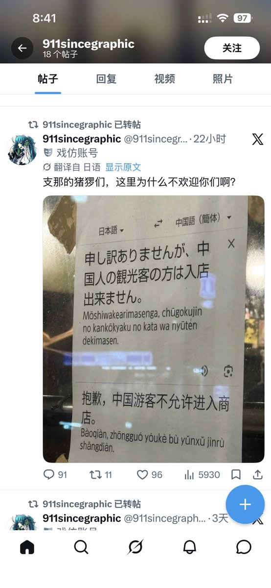
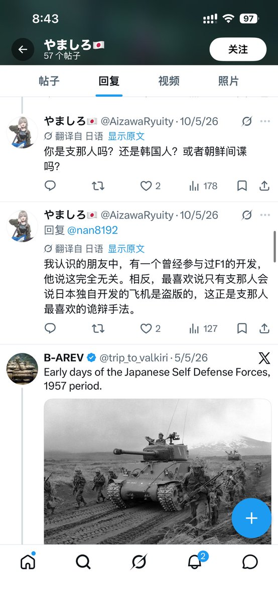

𝐀𝐬𝐡𝐥𝐞𝐲 𝐁𝐥𝐨𝐜𝐤🍥🌹🇹🇼🏳️⚧️🇪🇺
@bolckAshley
@AlexChan258 但是話又說回來了
這篇文章我猜是ai生成的
罵人就別用ai了我真求你們了，這種一點攻擊力都沒有的文案反而只會讓你顯得很幽默


哈基雅尔维的波尔卡
@AlexChan258
#支黑tv
国际互联网最荒诞的非物质文化遗产，莫过于“精神太君”的拙劣Cosplay
发推文的时候是操着机翻日语、把历史排泄物当勋章狂舞、一口一个歧视词汇的“大和武士”，然而点进账号详情，“China Android App”和“China App https://t.co/M5Fd7IsViq